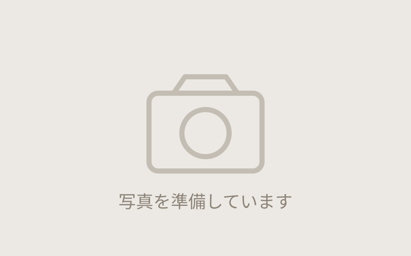

中古車販売
探すのは、
在庫ではなく
ご希望から。
ご予算・ご希望の車種をうかがって、お客様にぴったりの一台をお探しします。
 車検整備認証工場仙4-6522
車検整備認証工場仙4-6522
USED CAR
多種多彩な中古車選びが可能です
ご予算・ご希望の車種に合わせて、お客様にぴったりの一台をお探しします。国指定の認証工場ならではの整備・点検を行った上でお渡しできるのが水野谷自動車の強みです。まずはお気軽にご相談ください。

HOW IT WORKS
お探しするまでの流れ
1. ご希望をお聞かせください
車種・年式・ご予算・お使いになる場面（通勤／お買い物／雪道など）をうかがいます。決まっていなくても大丈夫です。
2. お探しします
条件に合う一台をお探しし、車両の状態とお見積りをあわせてご報告します。
3. 整備してお渡しします
国指定の認証工場として点検・整備を行ってからお渡しします。ご納車後の車検・整備もそのままお任せいただけます。
STOCK
在庫車両

在庫状況はその時々で変わります。お探しの車種がお決まりの方も、まだ迷っている方も、お気軽にお問い合わせください。